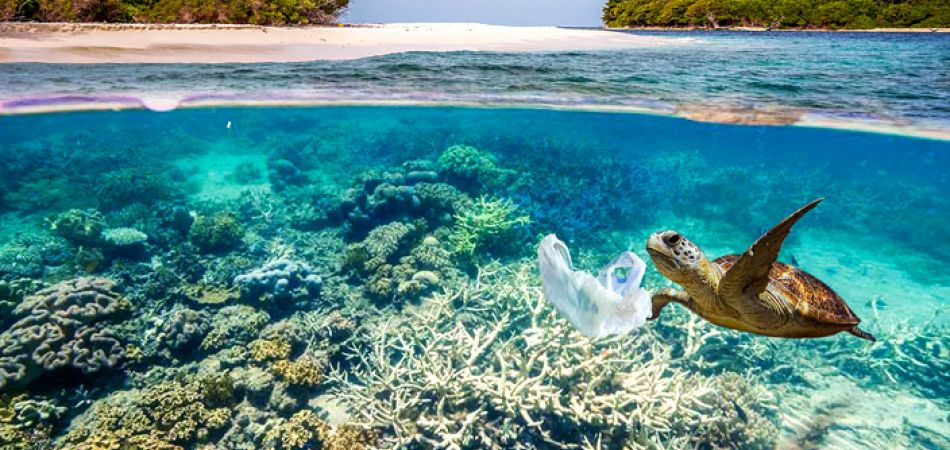

Choose to stop pollution
What happens to the ocean impacts all of us. The ocean is our responsibility, but we can’t do it alone - we need to join forces with you and people around the world to keep our ocean and our coastal communities healthy and prosperous.
You can’t help but be inspired by the ocean. From majestic whales to jaw-dropping waves, colorful coral reefs to graceful sea turtles, the ocean can capture your heart and soul like nothing else on earth.
Our ocean faces many threats like the onslaught of ocean trash, overfishing and ocean acidification. With the help of donors like you, Ocean Conservancy is developing innovative solutions to save our ocean. Thank you for your donation today.
Ocean Climate
Read more
The Cause
Read more
The Approach
Read more
A I R Avoid. Intercept. Redesign.
The majority of the plastic in our oceans is broken into small pieces 1/4 of an inch or smaller and scattered over massive areas. The center of a Vortex, where the plastic concentration is highest, is constantly moving. It is difficult to collect and retrieve this plastic without harming fish and other sea life.
Only a minority of plastic pollution floats on or near the surface, while the majority sinks to the ocean floor. While it still seems impossible to clean up the Vortexes, huge volumes of plastic debris wash up on beaches and shorelines, where it can be collected relatively easily and without complex technology by the global Parley network of cleanup organizations.
Awareness campaigns, cleanup operations and recycling initiatives allow us to help alleviate immediate threats to marine wildlife and reduce the use of virgin plastics in product design, manufacturing and distribution. In close collaboration with major brands, we also work to reduce overall plastic use.